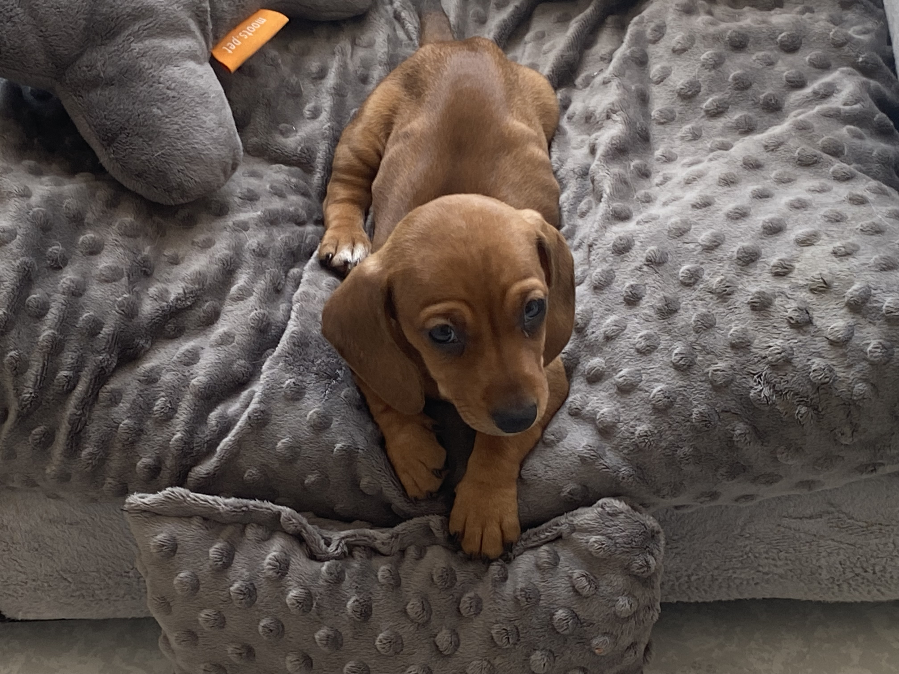

Los Dachshund, cariñosamente llamados perritos salchicha, son una de las razas más entrañables y distintivas del mundo canino. Con su cuerpo alargado, patitas cortas y mirada vivaz, estos pequeños perros tienen una personalidad mucho más grande que su tamaño.
Originalmente criados en Alemania para la caza de tejones, los Dachshund son valientes, curiosos y sorprendentemente ágiles. Hay tres variedades según su tipo de pelaje: pelo corto, pelo largo y pelo duro, y pueden ser de diferentes tamaños, como el estándar y el miniatura.
A pesar de su tamaño compacto, los Dachshund tienen un espíritu intrépido y protector. Les encanta estar con su familia humana, y suelen desarrollar un fuerte apego con una o dos personas en particular. Son juguetones, inteligentes y muy leales.
Ver a un perrito Dachshund correr, con esas patitas cortitas moviéndose a toda velocidad, es una de las cosas más adorables que existen. ¡Y no hablemos de cuando se acurrucan para dormir como si fueran una pequeña croqueta!
